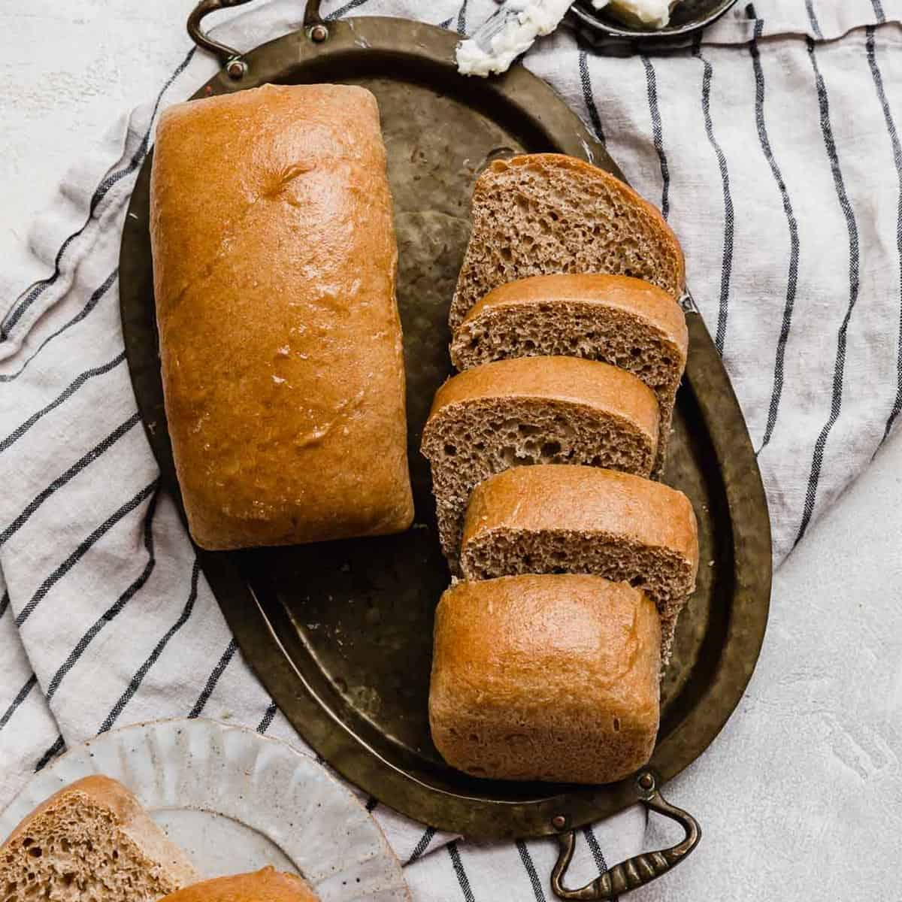

♪ Me, Myself, and I ♩
Hi my name is Abdullah. I like animals, space, flowers and nature in general want to guess my favorite flower is?
If you said Spider Lily you're correct, I like it because of it's uniqueness and meaning in some cultures.
How to make bread
Ingredents
- warm water
- active dry yeast
- sugar
- flour
- salt
- olive oil
instructions
- combine warm water,sugar, and yeast in a large bowl. Let it sit for 5 minutes until it becomes bubbly
- add oil,salt, and flour to the yeast mixture. Mix it well until it forms a shaggy dough then add more flour until it pulls away from the side of the bowl
- knead for 8 minutes until the dough is smooth, elastic, and springs back when poked
- place the dough in a greased bowl and cover it with plastic wrap. Let it rise in a warm spot for 1 hour
- punch the risen dough to release the air, then divide the dough into equal pieces of loaves
- cover the pans loosely and let the loaves rise again for 30 minutes until puffy and raeching the top of the pans
- bake the bread, preheat oven to 350*f then bake for 30-40 mintues until it's golden brown
- let it cool then slice and serve the bread
